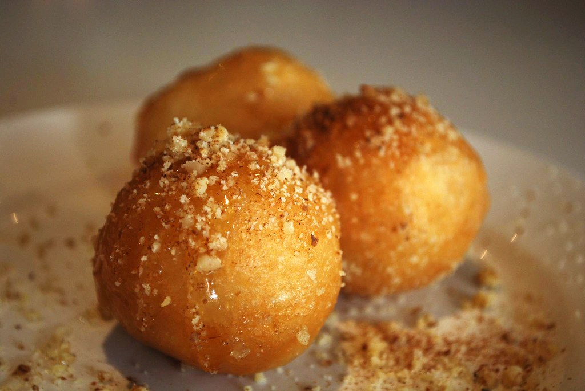

Loukoumades

Home
Description
Loukoumades are fried Greek honey puffs. They're popular all around the
Mediterranean, especially in Greece, and are beloved as a Hanukkah
treat among Sephardic Jews.
Ingredients
- 2 (.25 ounce) packages active dry yeast
- 1 cup warm water, no more than 100 degrees F (40 degrees C)
- ½ cup warm milk
- ¼ cup white sugar
- 1 teaspoon salt
- 4 cups all-purpose flour
- 3 large eggs
- ⅓ cup butter, softened
- ½ cup honey
- ½ cup water
- 4 cups vegetable oil, or as needed
- 2 teaspoons ground cinnamon